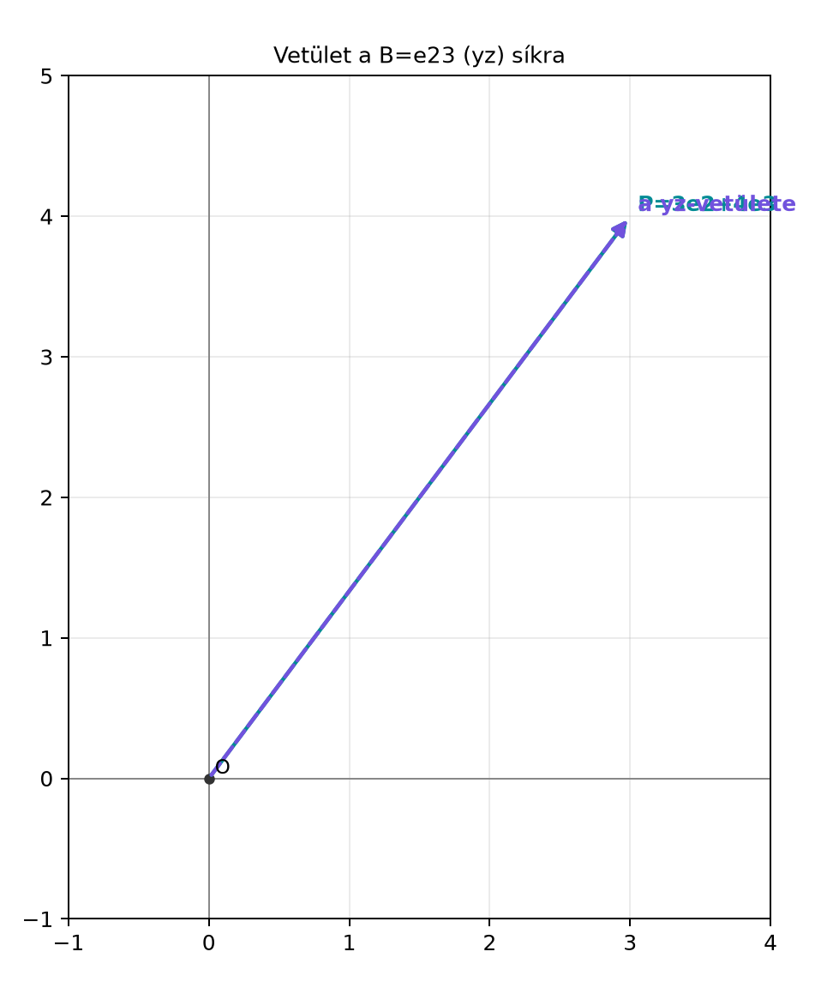

Az előző alfejezetben megtanultuk, hogyan kell egy vektort egy
egyenesre vetíteni: adott egy
irány, és az
vektort párhuzamos plusz merőleges részre bontottuk a következő
alakban:
A térben azonban gyakran nem egyenesre, hanem síkra
akarunk vetíteni. Például egy lejtőn csúszó test sebességét a lejtő
síkjával párhuzamos és arra merőleges részre bontjuk, vagy egy grafikus
programban egy pont árnyékát keressük egy síkon. A geometriai algebrában
a síkot nem a normálvektorával, hanem egy
bivektorral adjuk meg. Ezért az a kérdés: hogyan
általánosítható a fenti felbontás, ha
helyett egy
bivektor áll?
A válasz szerkezete pontosan ugyanaz lesz: az
vektort megszorozzuk
-vel,
a szorzat vektor- és trivektorrészére bontjuk, majd jobbról megszorozzuk
-gyel.
9.4.2 Szemléletes kép
Legyen a sík a
bivektor által kifeszített
-sík,
azaz az a sík, amelyik az
és
tengelyeket tartalmazza. Erre a síkra merőleges az
tengely. Az
vektor felbontása szemmel látható: a síkkal párhuzamos rész
,
a síkra merőleges rész pedig
.
Az alábbi ábra a sík
-nézetét
mutatja, a merőleges rész a rajz síkjából kifelé mutat.

Vetület a B=e23 (yz) síkra - A rajz az
yz-síkot mutatja; az x-tengely a rajz síkjára merőleges. A teljes
a=2e1+3e2+4e3 vektor yz-vetülete P=3e2+4e3, a visszautasítás Q=2e1
kifelé mutat.
A cél most az, hogy ezt a felbontást ne „ránézésre”, hanem a
geometriai szorzás szabályaival kapjuk meg.
9.4.3 A bivektor inverze
Először szükségünk van a
bivektor inverzére. A pengék inverzére vonatkozó általános szabály
szerint
Egy bivektor reverziója előjelet vált:
.
Emellett egy egyszerű térbeli bivektorra
,
ahol
a bivektor területét jelöli. Ezért
és így
Ez a képlet hasonlít a vektor inverzéhez, de a negatív
előjel fontos. Például ha
,
akkor
,
tehát
,
és
9.4.4 Definíció
Definíció. Legyen
nemnulla egyszerű bivektor a
algebrában, és legyen
tetszőleges vektor. A
vektornak a
síkjára eső vetülete (projection)
a
síkjára merőleges visszautasítása (rejection) pedig
Itt
a könyvben használt bal kontrakció, tehát vektor-bivektor belső
szorzat.
A két képlet formailag ugyanaz, mint az egyenesre vetítésnél: a belső
szorzat adja a párhuzamos, a külső szorzat a merőleges részt. A
különbség az, hogy most
bivektor, ezért
vektor,
pedig trivektor lesz. A jobbról történő
-gyel
való szorzás mindkettőből vektort csinál.
9.4.5 A felbontás levezetése
A levezetés kulcsa ugyanaz az asszociativitás, mint az
egyenesnél:
A
szorzatot a vektor-bivektor szorzás szabálya szerint bontjuk fel:
Ezt behelyettesítve:
Így megkaptuk a kívánt felbontást:
Most már csak azt kell ellenőrizni, hogy az első tag valóban a
síkjában fekszik, a második pedig valóban merőleges a
síkjára.
9.4.6 Kidolgozott példa
Legyen
Először kiszámítjuk az
szorzatot:
A bázisszorzások:
Ezért
A vektorrész a belső szorzat, a trivektorrész a külső szorzat:
Mivel
,
a vetület:
Használjuk a fenti bázisszorzásokat:
így
A visszautasítás:
Számoljuk ki az
szorzatot:
Tehát
A két rész összege:
A síktól való távolság pedig a merőleges rész hossza:
9.4.7 Tétel és bizonyítás
Tétel. Legyen
nemnulla egyszerű bivektor
-ban.
Ekkor tetszőleges
vektorra:
;
a
síkjában fekszik, azaz
merőleges a
síkjára, azaz
Bizonyítás. Az első állítást a fenti levezetésben
már beláttuk.
A második állításhoz írjuk fel a vetületet
alakban. Azt kell megmutatni, hogy
.
A vektor-bivektor külső szorzat definíciója szerint
Itt
Másrészt a
vektor a
síkjában fekszik, mert ha
ortonormált
vektorokkal, akkor
tehát
és
lineáris kombinációja. Egy ilyen síkbeli vektor antikommutál
-vel:
Ezért
Így
A harmadik állításhoz legyen
.
A belső szorzat definíciója szerint
Most
Az
kifejezés trivektor, tehát
alakú, ahol
a
pszeudoszkalárja. Mivel
minden bivektorral felcserélhető, kapjuk, hogy
Ezért
Ezzel a tételt bebizonyítottuk.
9.4.8 Pont távolsága síktól
Ha a
sík az origón megy át, és egy pont helyvektora
,
akkor a pont síktól mért távolsága a merőleges rész hossza:
Mivel pengék esetén a szorzat normája a normák szorzata, és
,
ezért
Ez a képlet geometriailag is érthető:
annak a paralelepipedonnak a térfogatát méri, amelyet
és a
síkot kifeszítő két vektor határoz meg. Ha ezt a térfogatot elosztjuk a
sík területével, akkor a síkra merőleges magasságot kapjuk.
A korábbi példában
,
,
tehát
9.4.9 Python-ellenőrzés
A ga3 modullal ugyanez a számítás így néz ki:
from ga3 import MV3, vec3B = MV3(e23=1.0)a = vec3(2, 3, 4) # 2e1 + 3e2 + 4e3P = a.lcontract(B) * B.inverse()Q = (a ^ B) * B.inverse()print("P =", P)print("Q =", Q)print("P + Q =", P + Q)print("távolság =", Q.norm())
A
előjelét eltéveszteni. Vektoroknál
,
ezért sokan bivektorra is
-t
írnának. A helyes képlet azonban
mert a bivektor reverziója
.
Ha a negatív előjelet lehagyjuk, a merőleges rész előjele
elromlik.
A szorzás sorrendjét felcserélni. A vetület
,
nem pedig
.
A geometriai szorzat nem kommutatív, és a két kifejezés általában nem
egyenlő. Például a fenti
,
esetben
,
ami nem a vetület.
A
jelet skalárnak gondolni. Két vektor skalárszorzata skalár, de
egy vektor és egy bivektor belső szorzata ebben a könyvben
vektor. A
jelentése:
,
és a
síkjában fekvő vektort ad.
A síkot a normálvektorral keverni. Ha
a sík normálvektora, akkor a sík bivektora a duális
-vel
kapható, de a vetítési képletben közvetlenül a
-t
kell használni. A normálvektorral való vetítés képlete más, és
előjelkonvenciókban is eltér.
9.4.11 Feladatok
9.4.11.1 (a) Fogalmi kérdés
Mit jelent geometriailag, ha egy
vektorra
?
És mit jelent, ha
?
9.4.11.2 (b) Kézi számolás
Legyen
és
Számítsd ki a
és a
vektorokat, valamint a pont síktól való távolságát.
9.4.11.3 (c) Levezetési
feladat
Bizonyítsd be a definíciók felhasználásával:
ha
,
akkor
;
ha
,
akkor
.
Értelmezd az eredményt geometriailag.
9.4.11.4 (d) Python-feladat
Legyen
és
Számítsd ki Pythonban a
,
részeket, ellenőrizd, hogy
,
és add meg a síktól való távolságot.
9.4.12 Megoldások
9.4.12.1 (a)
A
feltétel azt jelenti, hogy
a
síkjában fekszik, mert ha
a sík két kifeszítő vektorának lineáris kombinációja, akkor a
-vel
vett külső szorzata elfogy. A
feltétel azt jelenti, hogy
merőleges a
síkjára, mert ekkor
és
antiszimmetrikus része nulla.
9.4.12.2 (b)
Legyen
.
Ekkor
.
Számítsuk ki az
szorzatot:
Itt
,
,
.
Így
A vetület:
A visszautasítás:
Tehát
és a távolság
.
9.4.12.3 (c)
Ha
,
akkor
Ebből
Ez azt jelenti, hogy ha egy vektor már
a síkban van, akkor a síkra vetítés önmagát adja vissza.
Ha
,
akkor
tehát
Ez azt jelenti, hogy ha egy vektor
merőleges a síkra, akkor a síkra vetített része nulla, és a teljes
vektor a visszautasítás.
9.4.12.4 (d)
A kód:
from ga3 import MV3, vec3B =3* MV3(e31=1.0)a = vec3(2, 4, 5)P = a.lcontract(B) * B.inverse()Q = (a ^ B) * B.inverse()print("P =", P)print("Q =", Q)print("P + Q =", P + Q)print("távolság =", Q.norm())
A vetület a
által kifeszített
-síkba
esik, a merőleges rész pedig
.
9.4.13 Rövid összefoglaló
Ebben az alfejezetben az egyenesre vetítést általánosítottuk síkra.
Ha
nemnulla egyszerű bivektor
-ban,
akkor az inverze
.
Az
azonosságból kiindulva az
felbontás adja a síkkal párhuzamos és a rá merőleges részt:
Beláttuk, hogy
,
azaz a vetület a
síkjában fekszik, és
,
azaz a visszautasítás merőleges a síkra. A pont síktól mért
távolsága
A fenti képletek a geometriai algebra standard eredményei. A források
közötti eltérések főként a belső szorzat konvenciójában jelentkeznek:
ebben a könyvben
,
azaz a bal kontrakció. Más szerzők ettől eltérő belső szorzat-definíciót
is használhatnak, ezért könyvtárak vagy más jegyzetek
összehasonlításakor mindig a konvenciót kell ellenőrizni.